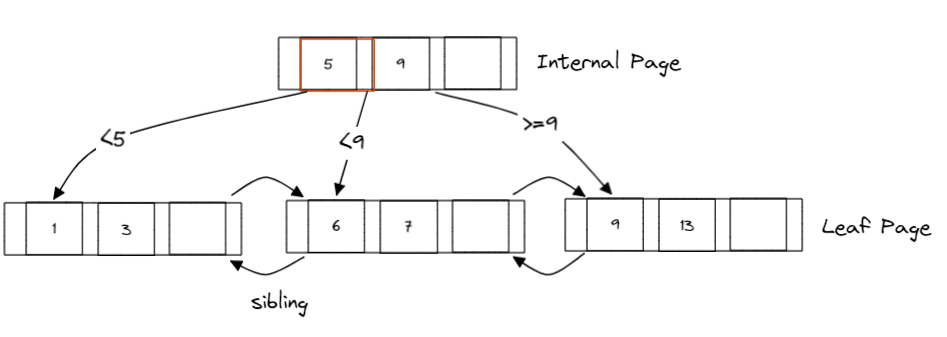

Introducation
耗时半个月，终于完成了这个逆天的实验。😊写并发部分期间一度想要放弃，但好在最后还是顶了下来，一个简单的bug足足找了有一个星期。最后直接一个图一个图给bug给肯出来了，因为自己做的是22年最新的，不太清楚这个实验之前是什么样的。我是后来才知道22年的文件给的函数很少，所以我的实现和绝大部分同学实现的不太一样，这也为我后期大换血埋下了伏笔😭。话不多说，下面开始回归正题。
这个project主要分成两个部分，第一个部分是实现b+ tree基本的CRUD。第二个部分则是实现b+ tree的并发控制。
Implement The BPlusTree
B+ Tree Structure
我们先来看一下B+ Tree的基本组成。
B+ Tree 主要由以下两种node组成，每个node是由database特定的page抽象出来的，实际实现的时候会巧妙的运用到reinterpret_cast<pointer of page type>。
- Internal Node Page
- Leaf Node Page

之前如果熟悉B Tree的话。就会立马知道B+ Tree和B Tree的一个显著的区别。B+ Tree只会把value存在叶子节点里，Internal Node只是用来帮助索引的抽象。